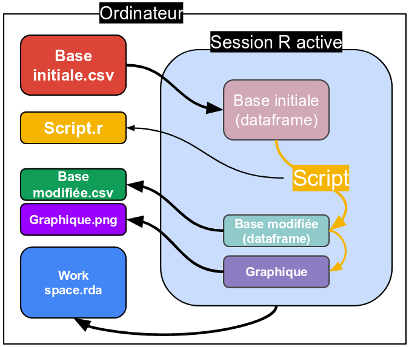

Lorsque vous démarrer R, une session se crée. Elle est initialement vide et ne contient aucun élément en mémoire.
Vous allez charger une base, située sur votre ordinateur, en important une copie dans la session R.
Toutes les modifications effectuées prennent effet sur cette copie.
Votre script est une zone de texte dans la session active. Si vous ne le sauvez pas (ctrl+s), il disparer lorsque la session est fermée.
Il en est de même pour les modifications effectuées sur la base importée ou les autres objets crées. Il vous faut sauver ces objets sous un autre format pour les exporter sur votre ordinateur. Une autre solution est de sauver une copie de la session active. En l’ouvrant dans R vous retrouvez tous les objets que contenait la session sauvée.
La session R active peut contenir de nombreux objets et des copies de bases parfois volumineuses. On fera attention à ne pas surcharger inutilement la mémoire. Dans la fenêtre ‘Environment’ (en haut à droite), vous avez la liste des objets présent dans la session et leur taille. Vous pouvez directement supprimer les objets inutiles à partir de cette fenêtre. 
Le plus simple est d’utiliser l’onglet ‘Import Dataset’ dans la fenêtre Environment.
Plusieurs formats d’imports sont proposés. Différents packages vous permettent d’étendre les possibilités, dans ce cas on utilisera une ligne de code pour charge les données.
Si on doit tapper le chemin d’un fichier, on retiendra que R utilise des “\” plutôt que des “/”. Pensez à les changer!
Pour des objets R enregistrés sous un format rda, on utilisera la fonction load(file = “nom_du_fichier.rda”). Les objets chargés conserveront les noms que vous leur aviez donné en les sauvant.
Pour un objet R enregistré sous un format rds, on utilisera la fonction readRDS(file = “nom_du_fichier.rds”). Vous pouvez attribuer un nouveau nom à l’objet chargé.
Une dataframe: on peut utiliser le format .csv.
write.csv(le_fichier_dans_r, “le_nom_sur_mon_ordi.csv”, row.names = FALSE)
Un graphique: un onglet dans la fenêtre plot permet de sauver sous différents formats.
Un script: file>save (ou ctrl+s).
Son workspace:
en entier, Session>Save workspace as
une sélection d’objet, save(objet1, objet2, file = “mon_nom_de_fichier.rda”)
un seul, save.RDS(objet, file = “mon_nom_de_fichier.rds”)
On peut crée un nouveau projet (File > New Project…) pour spécifier à R un dossier dans lequel il centralisera tous les fichiers d’une même session. On peut ensuite femer/ré-ouvrir ce dossier pour revenir sur ces éléments.
| Fonction | Description |
|---|---|
| write.csv(le_fichier_dans_r, “le_nom_sur_mon_ordi.csv”, row.names = FALSE) | sauve sur votre ordinateur, le_fichier_dans_r dans un fichier csv |
| save(objet1, objet2, file = “mon_nom_de_fichier.rda”) | sauve sur votre ordinateur, objet1 et objet2 dans un fichier rda |
| save.RDS(objet1, file = “mon_nom_de_fichier.rds”) | sauve sur votre ordinateur, objet1 dans un fichier rds |
benjamin.landre@inserm.fr